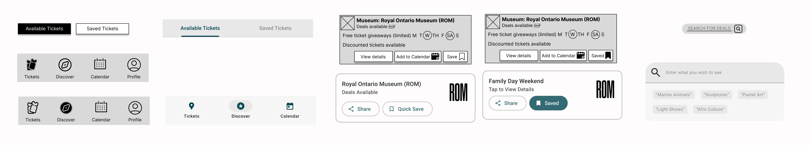
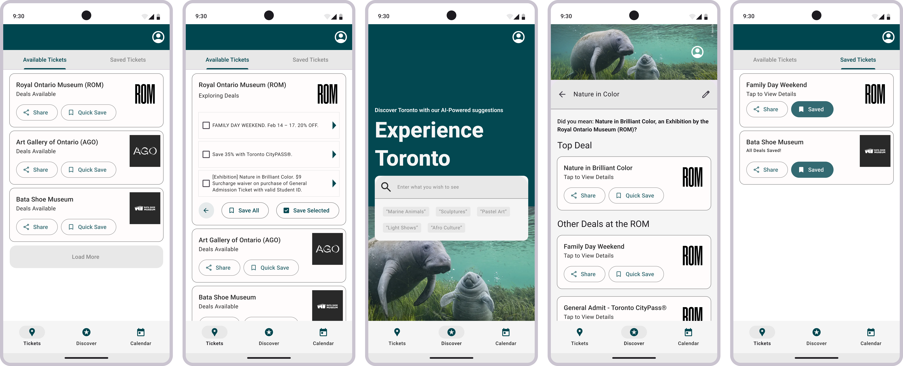

Mobile App for Ticket Deals: UX/UI Research
Translating UX Research insights into Mobile UI designs
 •
•
Mobile UI Mockups using Figma, Miro
•
•
Mobile UI Mockups using Figma, Miro
Summary: We (a team of 6 UX/UI Designers) studied accessibility challenges for Torontonians in the arts and culture domain, focusing specifically on how people discover and use museum ticket deals.

A city rich in culture, yet hidden behind paywalls
Toronto is filled with cultural heritage institutions. Yet many residents hesitate to visit them, not because of disinterest, but because of ticket prices and the effort it takes to find deals. When our team began this project, we asked ourselves a simple question: Why do people not take advantage of the many free or discounted museum admissions available in the city?
Our goal was to reduce this and create a mobile-first platform where deals are easy to discover and share.
Discovering the problem
Before talking to users, we wanted to understand the landscape. Our secondary research focused on how accessible cultural heritage institutions are for Torontonians, and how people perceive museum pricing and discounts.
We reviewed news articles, blogs, social media posts, and community forums. Reddit threads were especially revealing; people often stumbled upon free museum days by accident, surprised such opportunities even existed. Academic material was limited, but city websites and news reports provided data on attendance and pricing trends.
From this research, a clear picture formed. Free and discounted admissions do exist, but they remain underutilized because information is scattered across sources and poorly communicated.
This shaped our design direction. If awareness is the problem, the solution must be a user experience that centralizes discovery.
Asking the right questions
We then focused our primary research on four key questions:
How can museum admission information be made more visible?
How do people feel about ticket prices?
How aware are they of discount programs?
How do accessibility and affordability influence attendance?
We surveyed 42 participants (36 valid responses) and conducted 12 in-depth interviews with Toronto residents who were interested in visiting museums but were not able to do so regularly. Our goal was to map information behaviours with respect to ticket discovery.
What we found
→CA$30.00+
Ticket prices at major museums like the ROM and AGO, limiting attendance and audience reach.
350,000▼
was the attendance at The ROM in 2022, compared to 1.2Mn in 2019, suggesting post-pandemic challenges.
CA$0.00/-
Many Torontonians are unaware of free admission times because the information is scattered across sources.
25/36
Participants find ticket and discount information online, showing demand for easily accessible content.
18/36
Participants would visit the museum more frequently if discount information were easier to access.
6/12
Participants identified challenges in accessing discount information, highlighting a key usability issue.
Most participants actively searched for discount details online, but described it as a frustrating hunt. The median effort rating was 2.14/5, and over half said easier access to deals would make them visit more often.
Interviews reinforced this. People love museums for culture, history, and entertainment, but the friction of finding discounts pushes them away.
Insights to Direction
Our Persona: Mary’s journey mirrored that of many Torontonians. She wanted to engage, but found the process of discovering discounts time-consuming and unclear. Her story became the guide for our design process.
Mary, the Museum Go-er
Busy student 🏫 On a budget 💲
Loves exploring culture ❤️, lives in the moment 😌
Meet Mary,
the Museum Go-er!
"I would visit more museums if
I had free or discounted tickets"
Mary was a fictitious human birthed by the group's research data. A hard-working and busy student, when time allows, she opts to visit museums with her friends or even solo!
Mary’s attempt to visit a museum in the modern day and age mirrors the challenges faced by many Torontonians. Despite prolonged efforts to find discounted tickets, the benefits are overshadowed by the time spent searching.
The delay results in exceeding her budget, highlighting the difficulties in navigating the process of obtaining affordable tickets for museum visits.
Turning research into design priorities
To convert insights into features, our team used an Impact vs. Feasibility matrix to prioritize ideas.

From Mary’s pain points, we defined key design directions:
Ease of Access & Speed
Users want one-stop access to all available deals.
Planning by Date
Many plan their visits in advance, so calendar views matter.
Trust & Clarity
Interfaces must appear credible and simple to navigate.
Relevant Recommendations
Personalization encourages repeat visits.
Target Audiences
Our app will be designed for a diverse group of users who want easy access to tickets and discounts, as well as information about museum programs and events. We identified three primary user groups to target:
Students
Newcomers
Families
Designing the experience (UI Design - Low Fidelity)
We began sketching flows and layouts that would translate these needs into a mobile UI.
Our low-fidelity prototype, designed in Figma, was presented to a panel of senior UX researchers through the University of Toronto’s iSchool during our course INF1602 Design Playback sessions. Their feedback guided our next iteration.


We drew up a task flow:

and we conducted an evaluation ⬇.
After the internal and panel reviews, I revisited the design individually. Having prior experience with Android Studio, I leaned toward Material Design for feasibility and consistency.
One key change was removing the Map page. While people loved the idea, it just led to more questions and confusion on the functioning side; in its place, I introduced an AI-based search results page.

UI Component Library before (during Low-Fidelity Process) and after (based on Google's Material design guidelines).

Bringing it to life (UI Design - High Fidelity)



Users could now explore, save, and share museum deals from one unified feed, or plan their visit visually through a calendar-based planner. The design balanced information density with hierarchy, keeping Mary (and users like her) in mind throughout.
Validation
This phase was conducted before the High Fidelity design phase, purely to test our low-fidelity prototype and our planned task flows. Using moderated remote sessions via Zoom, participants aged 18+ interacted with the design while we observed and interviewed them.
We collected both quantitative performance data and qualitative feedback to identify friction points.

What I Learned
The goal of this project was to create a clean, functional UI that simplifies how Torontonians discover and access museum ticket deals.
Designing around real-world fragmentation, with many museums and systems, required an interface that brought coherence without adding cognitive load. Using visual hierarchy, filtering, and minimal navigation, we achieved a prototype that felt local, approachable, and intuitive. This experience refined my ability to prioritize features using an impact-feasibility matrix and deepened my understanding of trust-building through design clarity.
I also envisioned it as an AI-powered interface: recommendations and event highlights would adapt based on user preferences and behavior data, improving relevance over time.
Key Takeaway: Make messy systems feel simple
When back-end data is inconsistent, clarity in design becomes the user’s north star. A well-structured UI builds trust.